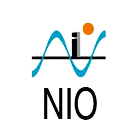

experience
Engineering Manager: Data & Bioinformatics
Debiopharm
July 2025 – Present
Lausanne, Switzerland
- ▹Leading cross-functional team of data engineers & bioinformaticians to architect & deliver next-generation data fabric & bioinformatics platforms
- ▹Engineering bioinformatics pipelines for processing multi-omics & non-clinical data for biomarker discovery programs & harmonizing datasets
- ▹Partnering with Translational Medicine department to provide data analysis & bioinformatics support for projects in small molecule discovery & antibody-drug conjugate (ADC) research
Data Engineering Team Lead
Debiopharm
July 2022 – June 2025
Lausanne, Switzerland
- ▹Architected & led the full-stack development of the company's most utilized data platform; Central Data Repository, automating ingestion & quality control of clinical & non-clinical trial data at enterprise-scale & positioning it as central data hub for all research & development programs
- ▹Engineered the deployment of custom-configured scientific analytics platforms (SAS Viya, Posit, Dotmatics, Expressions) on company-controlled cloud infrastructure, creating a unified ecosystem interfaced with the central data repository to ensure stringent performance & data governance
- ▹Engineered an entity-recognition & search platform by mining scientific publication databases - Automated internal trend-monitoring functions
- ▹Productionised privacy-aware large language model-based applications to streamline document analysis & study protocol writing processes
- ▹Supported compliance team via DevOps-based computerised system validation, infra qualification & security audits - Automated GxP workflows
- ▹Responsible for technical due-diligence of healthcare-startups (technical-stack, software & ML strategy) to aid our VC funds investment decisions
Senior Data Engineer
SOPHiA GENETICS
April 2021 – June 2022
Lausanne, Switzerland
- ▹Implemented terabyte-scale ETL pipelines to transform raw genomics data in-to analytics-ready format - Significantly lowering processing time
- ▹Developed API endpoints & CLI tools to expose database functionalities to internal teams- Facilitated data democratisation & access control
- ▹Implemented regression testing mechanisms for variant detection bioinformatics pipelines & dashboards delivering real-time insights into KPIs
- ▹Authored formal TLA+ specifications for ETL operations, enabling quantification & benchmarking of logical correctness across the data stack
Software Engineer | Research & Development Lead
GenLots
September 2019 – March 2021
Lausanne, Switzerland
- ▹Developed a microservices architecture, streamlining ingestion, transformation, & delivery of client ERP data to production-grade ML services
- ▹Deployed reinforcement learning-based solution, optimising end-to-end supply chain planning, warehouse management, & CO2 emissions
- ▹Engineered a suite of tools for reporting & monitoring integrated into dashboards delivering real-time business performance metrics to clients
- ▹Directed research projects in collaboration with Swiss watch manufacturing firms to predict inbound material needs & stabilise supply chains
Research Scientist
Distributed Object Programming Lab
November 2015 – August 2019
Lausanne, Switzerland
- ▹Partnered with public transport firms to architect & implement systems capturing high-frequency, real-time ridership data into a data warehouse
- ▹Developed a Machine Learning-driven platform to proactively detect & reduce ticketless travel across the Lausanne public transport network
- ▹Led platform development for a large-scale (>300 participants) spatiotemporal mobility-data collection project to facilitate ML-privacy research

Project Engineer
ETH Zürich
January 2015 – August 2015
Zürich, Switzerland
- ▹Implemented a software-defined-radio-based platform for reliable IoT product testing, generating interference patterns of wireless appliances
- ▹Deployed the platform in production at ETH Zurich & TU Berlin with toolsets allowing for remote configuration & logging performance metrics

Embedded Systems Engineer
BOLT IoT
September 2011 – January 2013
Goa, India
- ▹Designed PCB layouts for embedded platforms used in robotics & IoT systems & collaborated with software teams to ensure firmware integration
- ▹Implemented toolsets & applications to benchmark platform performance, validation tests, EMI simulations & industry compliance certifications

Project Intern
National Institute of Oceanography
June 2011 – August 2011
Goa, India
- ▹Contributed to autonomous underwater vehicle localization project by developing triangulation algorithms & learning satellite communication & ocean current modeling